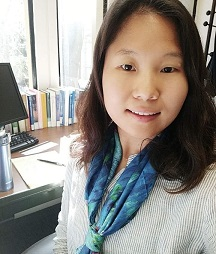

			<section>
		<section id="two" class="wrapper alt style2">
						<section class="spotlight">
							<div class="image"></div><div class="content">
								<p>I'm a Ph.D. candidate in linguistics at the University of California, San Diego. My research interests lie primarily in Experimental Syntax which explores the syntax of natural language using experimental methods. I'm also interested in how people process language and the interaction between processing of natural language and its grammar.</p>
							</div>
						</section>

			
			<h3>Education</h3>
			<h4>Ph.D. candidate in Linguistics</h4>
				<p><a href="https://ucsd.edu/">University of California, San Diego</a> (2018)</p>
			<h4>M.A. in English Language and Literature</h4>
				<p><a href="www.sogang.ac.kr">Sogang University</a>, Seoul, Korea (2014)</p>
			<h4>B.A. in English Language and Literature</h4>
			<h4> B.Ed. in Educational Culture</h4>
				<p><a href="www.sogang.ac.kr">Sogang University</a>, Seoul, Korea (2011, Summa Cum Laude)</p>
				<hr />
				
			<h3><a title="CV" href="http://acsweb.ucsd.edu/~dyk036/Dayoung_Kim_CV_201808.pdf"><b>DOWNLOAD CV (August 2018 ver.)</b></a></h3>

			</section>
